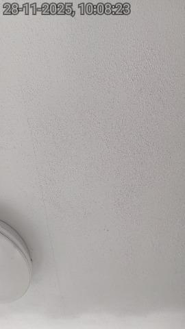

TEAMS has produced the report — it's queued for QA.
TEAMSasbestos surveying
Quality Assurance
197 records
RAG
All
Red
Amber
Green
Search reports…
RefProject [Client]SiteSORSamplesQA
J0008P0006 [L&Q]12 Heron RiseW012 · TRK-8841LS
J0009
report produced
P0006 [Ongo Homes]45 Jeffrey LaneW043 · TRK-9024Start QAJ0011P0009 [BPHA]5 Mallard WayW041 · TRK-9031—
J0014P0012 [A2]3 Heron RiseW074 · TRK-9044—
J0015P0006 [Ongo Homes]47 Jeffrey LaneW010 · —JR
Survey complete · lab results in · report generated by TEAMS — ready for QA
The agent's sole job: check every section of the produced report
J0009 · Ongo Homes · MQF3177 · Issue 8Page 1 of 25
Front —Asbestos Survey Report▸ BackQueuedCheckingChecked
Refurbishment Asbestos Survey · For Ongo Homes · J0009 · UPRN 4231 · 45 Jeffrey Lane, Belton, Doncaster, DN9 1LU
Scope, Purpose, Aims & Objectives
This is a report on a pre-refurbishment survey. The Control of Asbestos Regulations 2012 create a duty to manage asbestos; the scope is to advise the duty holder how to manage asbestos within the premises, recording the location, extent, product type and means of identification of all ACMs.
Quick Links: ACMsNon-Suspect / NADISNo AccessUKAS 0042
J0009 · Ongo HomesPage 3 of 25
Section 1 —Survey Details▸ BackQueuedCheckingChecked
Address · Client · Organisation · Document Authorisation
Survey addressUPRN 4231 · 45 Jeffrey Lane, Belton, Doncaster, DN9 1LU
ClientOngo Homes · Ongo House, High St, Scunthorpe, DN15 6AT
OrganisationThames Laboratories · ISO 17025 · UKAS 0042
Survey infoJob J0009 · date of survey 09/06/26 · date of report 16/06/26
Doc. auth.Lead Surveyor D. Whitaker · Quality Checked by — awaiting analyst → J. Richards (UKAS)
J0009 · Ongo HomesPage 4 of 25
Section 2 —Executive Summary▸ BackQueuedCheckingChecked
Site-Specific Summary of ACMs and Risk Scores
Location / ACMMeans of IDRiskAction
Airing cpbd ceiling · AIBPresumed4 (M)Manage
Boiler flue · laggingIdentified8 (M)11 (H)Remove
Floor tiles · vinylIdentified3 (L)Manage
Site-Specific Areas of No Access: below floor covering, hallway — access denied (NADIS); loft — hatch sealed. Summary of Non-Suspect / NADIS items recorded.
J0009 · Ongo HomesPage 9 of 25
Section 3 —Survey Information▸ BackQueuedCheckingChecked
ExclusionsAgreed exclusions: N/A · areas included / not included listed
Survey methodSurveyors hold BOHS P402 / RSPH L3 Award in Asbestos Surveying
Type of surveyRefurbishment & M&T
DeviationsMethod variations / deviations & reasons: none recorded
J0009 · Ongo HomesPage 12 of 25
Section 4 —Survey Results▸ BackQueuedCheckingChecked
Marked-Up Plans · occurrences located room by room
Pictures and Risk Scores of Individual Occurrences
Material Assessment · Ref S07 · Airing cupboard, ceiling · AIBMaterial Risk 4 (M)

S07 · photo
Subject matches · AIB ceiling
In focus · clear
Ref S07 labelled
Product type2 · AIB
Asbestos typeChrysotile
SurfacePainted
ConditionGood
Means of IDPresumed
ActionManage
Comments"aib panel to airing cupbrd ceiling presumed chrysotile good cond painted score abt 4 manage no access loft hatch sealed" → "AIB panel to airing cupboard ceiling. Presumed Chrysotile. Good condition, painted surface. Material score 4 — Manage. No access to loft (hatch sealed)."
J0009 · Ongo HomesPage 20 of 25
Section 5 —Bulk Analysis Results▸ BackQueuedCheckingChecked
Name & labSamples sent to Thames Laboratories · UKAS 0042 (per CAR 2012)
Method refFour types of identification:
No suspect materialPresumedStrongly PresumedIdentified · sampled
S12 basisWorst-case applied: Presumed → Strongly Presumed (HSG264 ¶48)
Analysed by polarised light microscopy & dispersion staining (HSG248) · UKAS bulk certificate attached.
J0009 · Ongo HomesPage 22 of 25
Section 6 —Survey Appendices▸ BackQueuedCheckingChecked
Material Risk Assessment Algorithm
HSE 12-point · boiler flue max 12
Product type — thermal insulation / lagging3
Extent of damage / deterioration — medium2
Surface treatment — unsealed3
Asbestos type — Crocidolite3
Material score (10+ = High)0HIGH▲ Remove · PTW
Actions & Priorities · Regulations & Guidance (CAR 2012 — determine, presume, record) · Commitments for Continual Improvement.
QA · changes made
0 / 7sections checked
Edits: 0 · Flags: 0
S2 Risk score corrected — 8 (M) → 11 (H)
S4 Occurrence comment rewritten clean
S4 Photos verified — right subject & clear
S5 ID basis → Strongly Presumed
S1 Quality Checked by — signed
▲ Boiler flue · MRA 11 — HIGH · Remove
QA passed7 sections · all rules checked
Document
Authorisation
Authorisation
J. RichardsQuality Checked by · UKAS analyst
Report QA — autonomously
Every section checked.
The analyst still signs.
0sections· checked in seconds
J0009 · trained on Thames Labs' own corrected reports · every section, score, basis & photo checked against the rules · the accredited analyst signs every one
The throughput ceiling — liftedThames Laboratories · Finian Advisory
Illustrative — depicts the TEAMS / UKAS report workflow